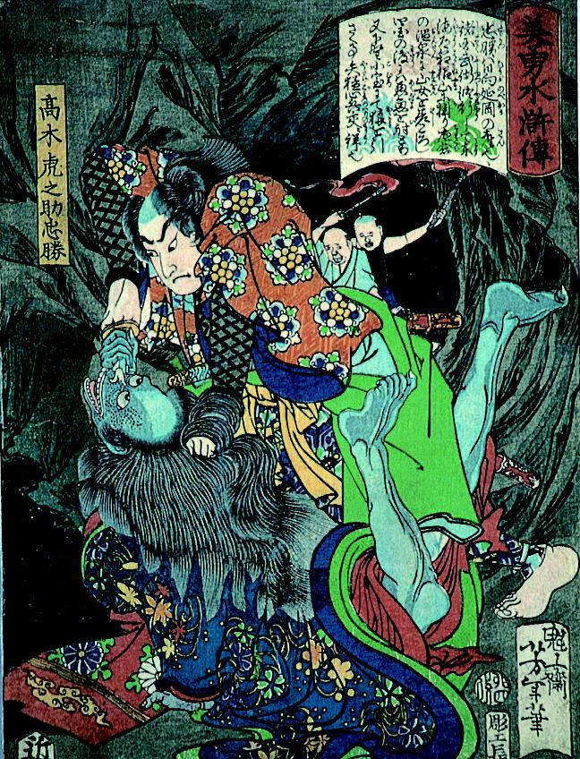

忠勝が山女を組み伏せる場面。山女は美しい着物を着ているが、肌は青く髪は乱れている。首の辺りを刀で刺されており、海老のように仰け反っている。
著作者：月岡芳年／出典：親書誌：A5_hermitage_0005：美勇水滸伝 高木虎之助忠勝；ビユウスイコデンタカギトラノスケタダカツ／日付：2011／資源識別子：A5_hermitage_0005_0001_0000
Copyright (c)2010- International Research Center for Japanese Studies, Kyoto, Japan. All rights reserved.